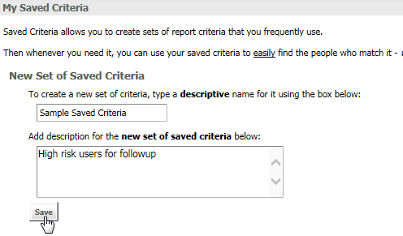
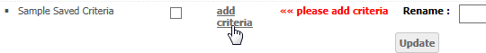
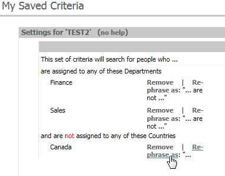
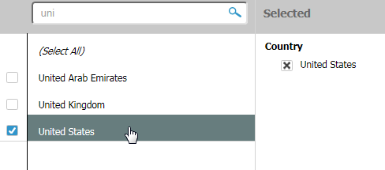
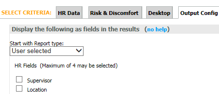
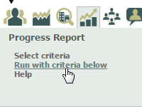

You can create your own Saved Criteria for reports based on the users your need to manage and the reports you run on a regular basis.
To create a new Saved Criteria set:
Click Save.

Your new Saved Criteria will be displayed under Manage Your Saved Criteria. Next you will need to choose the criteria for the new Saved Criteria.

You may add or edit filter criteria for the following categories (see below for more explanation):
In the Output Config tab you can choose to include in the output additional HR fields and desktop data information (from logpoints).
Report criteria available for selection include:
HR Data: Filter on user HR attributes.
Risk & Discomfort: Filter for user's risk and discomfort levels
Desktop: Filter for RSIGuard data (if installed)
In addition, you can configure the report output and save it with the saved criteria set.
Filtering by HR Data Values
HR Data includes any of the attributes from the Attribute Types included in the user profiles.
Select an Attribute Type, then select from the available attributes to add them to the Selected column as a report filter.
For example, if you select the Attribute Type "Department," you can then select values "Sales" and "Marketing" to filter for users in the Sales and Marketing departments, thereby excluding users in other departments from the report.
You can also re-phrase a statement using HR Data as a negative. For example, you can include a second Attribute Type Country and rephrase the Country selection as a negative, so that the filter includes "all users who are assigned to Sales and Marketing and are not assigned to Canada".

If there are a more than 300 attributes for an Attribute Type, use the search field to find specific attributes. Click on the search icon to display a text box for searching.
To see all values that contain a certain set of letters or phrase, such as "uni", enter "%uni%" into the search box. The results will contain all values that contain "uni".

Risk & Discomfort
To add criteria on risk & discomfort, select the Risk & Discomfort tab.
You can select any combination of risk and discomfort levels. If none are selected, all risk and discomfort levels will be included when running reports with the My Saved Criteria.
For more information about the different risk levels, see Risk Levels.
Desktop
To add criteria for Desktop (i.e., RSIGuard) information, select the Desktop tab.
You can then select any combination you want to include. If none are selected, all will be included when running reports with the Saved Criteria list.
See the Desktop section for more guidance on making your selections.
To configure the output options for your My Saved Criteria, click the Output Config tab.
The Start with Report type option allows you to select the report type to run first when the Saved Criteria is chosen in your report configuration, regardless of what type of report you are running. In essence, it sets up an initial filter to use before running any report with additional criteria, such as a filtered list of users from an Employee List Report on whom you want to run a Progress Report.
Choose User selected if you want the Saved Criteria to be used for any report without first generating a default report type.

For example, if you choose to run a Progress Report and select a Saved Criteria where the "Start with Report type" = Employee List Report, the system will generate the Employee List Report first, and not the Progress Report. To subsequently see a Progress Report with the Saved Criteria, hover over the small Progress Report icon in the upper right of your report and click on Run with criteria below.

Add Active Status Override, HR Fields, or Desktop Information
Under Output Config, you can choose to include the Active Status Override, HR Fields (Maximum of 4), and Desktop Information.
Hide Default Columns
Default columns included in the report may be hidden if desired. Default columns displayed may depend on your system configuration, but generally they include:
Add columns to the Employee List Report
You can add the dates of up to four log points to your report.
For definitions of the log points that may be chosen, please see Appendix A.